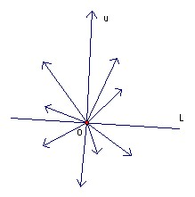
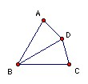

If S is a finite set of non-zero vectors in the plane, then a maximal subset is a subset whose vector sum has the largest possible magnitude. Show that if S has n vectors, then there are at most 2n maximal subsets of S. Give a set of 4 vectors with 8 maximal subsets and a set of 5 vectors with 10 maximal subsets.
Solution

Suppose u is a maximal sum of vectors in S. Base all vectors at O. Take a line L through O perpendicular to u. Then no vector which is included in u can lie on the opposite side of L for then removing it would increase the magnitude of u. Similarly no vector included in u can lie along L. Equally, any vector on the same side of L as u must be included. Thus the line L divides the vectors included in u from those not included. But it is clear that if we rotate L through all possible positions then we can define at most 2n sets in this way (because the set of points on one side of L only changes when L passes through a point of S). Thus there cannot be more than 2n maximal subsets.
Take a regular pentagon ABCDE and take the vectors as AB, BC, CD, DE, EA. Then the sum greatest possible magnitude is a diagonal of the pentagon. This can be achieved in 5 ways as the sum of two consecutive sides and in 5 ways as the sum of three consecutive sides, giving 10 in all.

Take an equilateral triangle ABC and a point D equidistant from A and C with BD = BA. Take the vectors as AB, BC, CD, DA. Then the maximum magnitude is the side of the equilateral triangle, realised as AB, BC, AB + BC, DA + AB, BC + CD, CD + DA, CD + DA + AB, BC + CD + DA, giving 8 in all.

© John Scholes
jscholes@kalva.demon.co.uk
2 Dec 2003
Last corrected/updated 2 Dec 2003